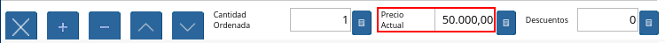
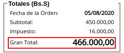

Interfaz de Punto de Venta¶
Ubique y seleccione en el menú de ADempiere, la carpeta “Gestión de Ventas”, luego seleccione la carpeta “Órdenes de Venta”, por último seleccione la carpeta “Punto de Venta”, finalmente seleccione la ventana “Punto de Venta”.
Imagen 1. Menú de ADempiere

Podrá visualizar la ventana “Selecciona Terminal PDV”, con la opción para seleccionar el terminal previamente configurado con el cual va a trabajar el vendedor.
Imagen 2. Ventana Terminal PDV

Navegue entre las opciones disponibles en la ventana “Selecciona Terminal PDV”, seleccionando el terminal correspondiente en el cual va a trabajar el vendedor.
Imagen 3. Seleccionar Terminal PDV

Seleccione la opción “OK”, para acceder al punto de venta correspondiente al terminal PDV seleccionado.
Imagen 4. Seleccionar la Opción OK

Podrá visualizar la ventana “Punto de Venta” con diferentes iconos, campos y opciones, que permiten el correcto funcionamiento del mismo.
Imagen 5. Ventana Punto de Venta

Barra de Herramientas del Punto de Venta¶
Contiene los iconos principales de las ventanas de ADempiere para realizar una gestión exitosa del punto de venta al momento de la venta de los productos. Dicha ventana cuenta con los siguientes iconos explicados a continuación.
Imagen 6. Barra de Herramientas del Punto de Venta

“Icono Registro Nuevo”: Permite crear un nuevo registro de orden de venta en el punto de venta configurado para el vendedor, la forma más facil de realizar este proceso es por medio de la tecla de acceso directo “F2”.
Imagen 7. Icono Registro Nuevo de la Barra de Herramientas del Punto de Venta
“Icono Imprimir”: Permite visualizar en la ventana “Informe”, el reporte de la orden de venta que esta realizando, en la cual cuenta con diferentes opciones por medio de las cuales el usuario puede acercar, alejar, guardar e imprimir el documento de orden de venta creado en el punto de venta previmente configurado para el vendedor. Esta acción se puede ejecutar por medio de la tecla de acceso directo “F12”.
Imagen 8. Icono Imprimir de la Barra de Herramientas del Punto de Venta
Al generar el reporte, tendrá la posibilidad de imprimir la orden de venta seleccionando el icono “Imprimir”, de la ventana “Informe”.
Imagen 9. Icono Imprimir de la Ventana Informe
“Icono Tipo de Documento”: Permite cambiar el tipo de documento cargado por defecto, el mismo define el comportamiento del documento que se esta generando y se encuentra explicado en el material Tipo de Documento elaborado por ERPyA. Adicional a ello, se puede ejecutar esta acción seleccionando la tecla “F10”.
Imagen 10. Icono Tipo de Documento de la Barra de Herramientas del Punto de Venta
La selección de este icono permite la visualización de la ventana “Tipo de Documento”, para seleccionar el tipo de documento con el cual requiere generar el documento.
Imagen 11. Ventana Tipo de Documento del Icono Tipo de Documento de la Barra de Herramientas del Punto de Venta
“Icono Información de Producto”: Permite realizar una búsqueda de los productos para consultar su información, en cuanto a categoría, código, nombre, UPC/EAN (código de barra), UM (unidad de medida), precios, disponibilidad, cantidad en existencia, cantidad reservada, cantidad ordenada y proveedor, por medio de la selección de los mismos en la ventana desplegada “Información de Producto”. De igual manera, se puede ejecutar esta acción seleccionando la convinación de las teclas “Alt+I”.
Imagen 12. Icono Información de Producto de la Barra de Herramientas del Punto de Venta
La selección de este icono permite la visualización de la ventana “Información de Producto”, para buscar el producto con el cual requiere generar el documento.
Imagen 13. Ventana Información de Producto del Icono Información de Producto de la Barra de Herramientas del Punto de Venta
“Icono Cliente”: Despliega una ventana que permite cambiar el cliente por defecto, con el fin de crear documentos personalizados.
Imagen 14. Icono Cliente de la Barra de Herramientas del Punto de Venta
La selección de este icono permite la visualización de la ventana “Socio del Negocio”, con diferentes campos que pueden ser utilizados como filtros de búsqueda de clientes ya registrados.
Imagen 15. Ventana Socio del Negocio del Icono Cliente de la Barra de Herramientas del Punto de Venta
La información de los clientes puede ser visualizada debajo del grupo de campo “Entrar Consulta”.
Imagen 16. Información de los Clientes en la Ventana Socio del Negocio del Icono Cliente de la Barra de Herramientas del Punto de Venta
Adicional a ello, la ventana cuenta con seis (6) iconos que permiten el registro de un nuevo cliente, la modificación de los registros existentes, el borrado de la consulta o búsqueda realizada, la recarga de la ventana para que sean actualizados los registros, la aceptación del cliente seleccionado y la cancelación de la selección del cliente. Esta acción se puede ejecutar seleccionando la convinación de las teclas “Alt+B”.
Imagen 17. Iconos de la Ventana Socio del Negocio del Icono Cliente de la Barra de Herramientas del Punto de Venta
“Icono Proceso”: Permite realizar diversas acciones desde la selección de las diferentes opciones que contempla el menú de dicho icono. A continuación se explica cada una de las opciones del “Icono Proceso”.
Imagen 18. Icono Proceso de la Barra de Herramientas del Punto de Venta
“Opción Cerrar Caja del Punto de Venta”: Permite realizar el cierre del punto de venta a través de la ventana de búsqueda inteligente “Cierre del Punto de Ventas”.
Imagen 19. Cerrar Caja del Punto de Venta del Icono Proceso de la Barra de Herramientas del Punto de Venta
“Opción Generar Factura Inmediata”: Permite generar una factura desde el punto de venta.
Imagen 20. Opción Generar Factura Inmediata del Icono Proceso de la Barra de Herramientas del Punto de Venta
“Opción Completar Orden Preparada”: Permite completar una orden preparada desde el punto de venta.
Imagen 21. Opción Completar Orden Preparada del Icono Proceso de la Barra de Herramientas del Punto de Venta
“Opción Anular Transacción de Venta”: Este proceso permite revertir la transaccion de venta.
Imagen 22. Opción Anular Transacción de Venta del Icono Proceso de la Barra de Herramientas del Punto de Venta
“Opción Crear Retiro de POS”: Permite realizar un retiro de punto de venta.
Imagen 23. Opción Crear Retiro de POS del Icono Proceso de la Barra de Herramientas del Punto de Venta
“Opción Imprimir”: Permite generar un reporte para visualizar la orden de venta que esta realizando en el punto de venta. Dicho reporte es visualizado en la ventana “Informe”.
Imagen 24. Opción Imprimir del Icono Proceso de la Barra de Herramientas del Punto de Venta
“Opción Crear Nueva Orden de Devolución”:
Imagen 25. Opción Crear Nueva Orden de Devolución del Icono Proceso de la Barra de Herramientas del Punto de Venta


“Icono Registros Históricos”: Despliega una ventana que permite realizar una búsqueda de todas las órdenes de venta realizadas, según lo seleccionado en los campos o filtros de búsqueda de dicha desplegada por el icono “Registros Históricos”. Esta acción se puede ejecutar seleccionando la tecla “F9”.
Imagen 26. Icono Registros Históricos de la Barra de Herramientas del Punto de Venta
La selección de este icono permite la visualización de la ventana “Orden de Venta”, con diferentes campos que pueden ser utilizados como filtros de búsqueda de las órdenes ya registradas.
Imagen 27. Ventana Orden de Venta Desplegada por el Icono Registros Históricos de la Barra de Herramientas del Punto de Venta
El grupo de campos “Entrar Consulta”, permite filtrar la búsqueda de información de la siguiente manera:
Imagen 28. Grupo de Campos Entrar Consulta de la Ventana Orden de Venta Desplegada por el Icono Registros Históricos
Se puede filtrar la información con ayuda del número de documento de la orden, ingresando en el mismo en el campo “Documento No.”.
Imagen 29. Campo Documento No. del Grupo de Campos Entrar Consulta de la Ventana Orden de Venta Desplegada por el Icono Registros Históricos
Se puede filtrar la información con ayuda del socio del negocio de la orden, ingresando en el mismo en el campo “Socio del Negocio”.
Imagen 30. Campo Socio del Negocio del Grupo de Campos Entrar Consulta de la Ventana Orden de Venta Desplegada por el Icono Registros Históricos
Se puede filtrar la información por rango de fecha, seleccionando el checklist “Fecha”, para que se habiliten los campos “Desde” y “Hasta, e ingresando en dichos campos el rango de fecha para buscar la orden.
Imagen 31. Campos Fecha Desde Hasta del Grupo de Campos Entrar Consulta de la Ventana Orden de Venta Desplegada por el Icono Registros Históricos
Se puede filtrar la información por ordenes procesadas desde el punto de venta, seleccionando el checklist “Procesado”.
Imagen 32. Checklist Procesado del Grupo de Campos Entrar Consulta de la Ventana Orden de Venta Desplegada por el Icono Registros Históricos
Se puede filtrar la información por las ordenes de venta realizadas por el socio del negocio tildado como vendedor de pasillo en la configuración del terminal, seleccionando el checklist “Vendedor de Pasillo”.
Imagen 33. Checklist Vendedor de Pasillo del Grupo de Campos Entrar Consulta de la Ventana Orden de Venta Desplegada por el Icono Registros Históricos
Podrá visualizar el resultado de la búsqueda de las órdenes, debajo del grupo de campo “Entrar Consulta”.
Imagen 34. Resultado de Búsqueda de Registros Históricos
Adicional a ello, la ventana cuenta con seis (6) iconos que permiten un nuevo registro, la modificación de los registros existentes, el borrado de la consulta o búsqueda realizada, la recarga de la ventana para que sean actualizados los registros, la aceptación del registro seleccionado y la cancelación de la selección del registro.
Imagen 35. Opciones de la Ventana Orden de Venta Desplegada por el Icono Registros Históricos

“Icono Registro Anterior”: Es un icono de desplazamiento que permite navegar entre los registros que se encentran ubicados antes que el registro en el cual se encuentra el usuario. Esta acción se puede ejecutar seleccionando la convinación de las teclas “Alt+Left”.
Imagen 36. Icono Registro Anterior de la Barra de Herramientas del Punto de Venta
“Icono Próximo Registro”: Es un icono de desplazamiento que permite navegar entre los registros que se encentran ubicados despues que el registro en el cual se encuentra el usuario. Esta acción se puede ejecutar seleccionando la convinación de las teclas “Alt+Right”.
Imagen 37. Icono Próximo Registro de la Barra de Herramientas del Punto de Venta
“Icono Pago”: Esta acción se puede ejecutar seleccionando la tecla “F4”.
Imagen 38. Icono Pago de la Barra de Herramientas del Punto de Venta
“Icono Anular Orden”: Permite cancelar o anular la orden de venta que esta realizando el usuario vendedor, al seleccionar este icono dicha orden dejará de estar disponible. Esta acción se puede ejecutar seleccionando la tecla “F3”.
Imagen 39. Icono Cancel Order de la Barra de Herramientas del Punto de Venta
“Icono Finalizar Ventana”: Permite cerrar la ventana “Punto de Venta” en la cual se encuentra el usuario vendedor. Esta acción se puede ejecutar seleccionando la convinación de las teclas “Alt+L”.
Imagen 40. Icono Finalizar Ventana de la Barra de Herramientas del Punto de Venta
Panel de Búsqueda de Productos¶
Permite realizar una búsqueda por código de producto, de todos los productos para la venta registrados en ADempiere que tengan coincidencia con lo que se introduzca en el campo “Código”.
Imagen 41. Carga de Productos por Búsqueda
Note
Esta acción se ejecuta automáticamente al ingresar el código del producto en el campo “Código”.

“Coincidencia por Código de Producto”: Permite buscar el producto por el código de identificación del mismo.
“Coincidencia por Nombre de Producto”: Permite buscar el producto por el nombre del mismo.
“Coincidencia por Disponibilidad de Producto”: Muestra la disponibilidad del producto buscado.
“Coincidencia por Precio Estándar de Producto”: Muestra el precio estándar del producto buscado.
“Coincidencia por Precio de Lista de Producto”: Muestra el precio de lista del producto buscado.
Imagen 42. Resultado de Búsqueda en el Panel de Búsqueda de Producto

Sección de Información de Producto¶
Luego de incluir los productos a la orden de venta, se visualizará su información principal en la sección “Información de Producto” de la ventana “Punto de Venta”.
Imagen 43. Sección Información de Producto de la Ventana Punto de Venta

“Código del Producto”: Muestra el código identificador del producto seleccionado.
Imagen 44. Campo Código del Producto de la Sección Información de Producto de la Ventana Punto de Venta

“Precio del Producto”: Muestra los precios estándar y en lista de precios para la venta del producto seleccionado.
Imagen 45. Campo Precio del Producto de la Sección Información de Producto de la Ventana Punto de Venta

“Nombre del Producto”: Muestra el nombre del producto seleccionado.
Imagen 46. Campo Nombre del Producto de la Sección Información de Producto de la Ventana Punto de Venta

“Unidad de Medida del Producto”: Muestra la unidad de medida en la que se presenta el producto seleccionado.
Imagen 47. Campo Unidad de Medida del Producto de la Sección Información de Producto de la Ventana Punto de Venta

“Categoría del Producto”: Muestra la categoría a la que pertenece el producto seleccionado.
Imagen 48. Campo Categoría del Producto de la Sección Información de Producto de la Ventana Punto de Venta

“Categoría del Impuesto del Producto”: Muestra la categoría del impuesto a la que pertenece el producto seleccionado.
Imagen 49. Campo Categoría del Impuesto del Producto de la Sección Información de Producto de la Ventana Punto de Venta

Barra de Edición de Productos¶
Contiene los campos para modificar la cantidad del producto a vender, el precio actual y el descuento del producto. Adicional a ello, contiene el icono para eliminar la línea de la orden donde se encuentra el producto, los iconos para sumar y restar la cantidad del producto a vender, los botones de navegación entre las líneas de la orden.
Imagen 50. Barra de Edición de Productos de la Ventana Punto de Venta

“Icono Borrar Línea”: Permite borrar el registro del producto creado en la línea seleccionada de la orden de venta. Esta acción se puede ejecutar seleccionando la convinación de las teclas “Ctrl+F3”.
Imagen 51. Icono Borrar Línea de la Barra de Edición de Productos de la Ventana Punto de Venta
“Icono Añadir”: Permite sumar a la cantidad ordenada del producto seleccionado, la cantidad ingresada en el campo “Cantidad Ordenada”. Esta acción se puede ejecutar seleccionando la convinación de las teclas “Ctrl+0”.
Imagen 52. Icono Añadir de la Barra de Edición de Productos
“Icono Menos”: Permite restar a la cantidad ordenada del producto seleccionado, la cantidad ingresada en el campo “Cantidad Ordenada”. Esta acción se puede ejecutar seleccionando la convinación de las teclas “Ctrl+0”.
Imagen 53. Icono Menos de la Barra de Edición de Productos
“Icono Registro Anterior”: Es un icono de desplazamiento que permite navegar entre los registros que se encentran ubicados antes que el registro en el cual se encuentra el usuario. Esta acción se puede ejecutar seleccionando la convinación de las teclas “Alt+Up”.
Imagen 54. Icono Registro Anterior de la Barra de Edición de Productos
“Icono Próximo Registro”: Es un icono de desplazamiento que permite navegar entre los registros que se encentran ubicados despues que el registro en el cual se encuentra el usuario. Esta acción se puede ejecutar seleccionando la convinación de las teclas “Alt+Down”.
Imagen 55. Icono Próximo Registro de la Barra de Edición de Productos
“Campo Cantidad Ordenada”: Corresponde a la cantidad de productos ordenados por el socio del negocio cliente, la misma puede modificarse desde los iconos “Añadir”, “Menos” y “Calculadora”, el último icono nombrado se encuentra ubicado del lado derecho del campo “Cantidad Ordenada”.
Imagen 56. Campo Cantidad Ordenada de la Barra de Edición de Productos

“Campo Precio Actual”: Corresponde al precio unitario para la venta que tiene el producto seleccionado, el mismo puede ser modificado con ayuda del icono “Calculadora” que se encuentra ubicado del lado derecho del campo “Precio Actual”.

Imagen 57. Campo Precio Actual de la Barra de Edición de Productos
“Campo Descuentos”: Corresponde al descuento que será aplicado al producto seleccionado al momento de la venta del mismo.
Imagen 58. Campo Descuentos de la Barra de Edición de Productos

Línea de la Orden de Venta¶
Es el espacio establecido para el listado de los productos seleccionados o ingresados en la orden de venta, en el cual se detalla el nombre del producto, la cantidad ordenada, la unidad de medida del producto, el precio unitario, el descuento del mismo, el neto de la línea, el impuesto y el gran total de la cantidad ordenada del producto.
Imagen 59. Grupo de Campos Línea de Productos
“Columna Nombre del Producto”: Columna en la cual se muestran los nombres de los productos agregados en las diferentes líneas de la orden de venta.
Imagen 60. Columna Nombre del Producto
“Columna Cantidad Ordenada”: Columna en la cual se muestran las cantidades ordenadas de los productos agregados en las diferentes líneas de la orden de venta, las mismas pueden ser modificadas con ayuda del icono “Calculadora” ubicado del lado derecho del campo.
Imagen 61. Columna Cantidad Ordenada
“Columna UM”: Columna en la cual se muestra la unidad de medida en la que se venderán los productos agregados en las diferentes líneas de la orden de venta.
Imagen 62. Columna Unidad de Medida
“Columna Precio Actual”: Columna en la cual se muestra el precio unitario de los productos agregados en las diferentes líneas de la orden de venta.
Imagen 63. Columna Precio Actual
“Columna Descuentos”: Columna en la cual se muestra el descuento de los productos agregados en las diferentes líneas de la orden de venta.
Imagen 64. Columna Descuentos
“Columna Neto de Línea”: Columna en la cual se muestra el monto total sin impuestos, de los productos agregados en las diferentes líneas la orden de venta.
Imagen 65. Columna Neto de Línea
“Columna Impuesto”: Columna en la cual se muestra el impuesto de las diferentes líneas de la orden de venta.
Imagen 66. Columna Impuesto
“Columna Gran Total”: Columna en la cual se muestra el monto total con impuestos, de las diferentes líneas de la orden de venta.
Imagen 67. Columna Gran Total


Información de la Orden¶
Contiene la información relacionada al encabezado de la orden de venta que esta realizando el usuario vendedor.
Imagen 68. Grupo de Campos Información de Orden
“Documento No.”: Muestra el número de documento de la orden de venta que esta realizando el usuario vendedor.
Imagen 69. Campo Documento No
“Tipo de Documento”: Muestra el tipo de documento con el cual fue creada la orden de venta desde el punto de venta.
Imagen 70. Campo Tipo de Documento
“Estado del Documento”: Muestra el estado del documento en el que se encuentra la orden de venta que esta realizando el usuario vendedor.
Imagen 71. Campo Estado del Documento
“Agente Comercial”: Muestra el nombre y el apellido del usuario vendedor relacionado a la orden de venta.
Imagen 72. Campo Agente Comercial


Totales (Bs.S)¶
Contiene la información detallada de los montos totales de la orden y la fecha de la creación de la misma.
Imagen 73. Grupo de Campos Totales Bs.S
“Fecha de la Orden”: Muestra la fecha en la cual fue creada la orden de venta.
Imagen 74. Campo Fecha de la Orden
“Subtotal”: Muestra el total del pago sin impuestos de la orden de venta.
Imagen 75. Campo Subtotal
“Impuesto”: Muestra el total de impuestos de la orden de venta.
Imagen 76. Campo Impuesto
“Gran Total”: Muestra el total a pagar por el cliente, el mismo se compone de la sumatoria del monto del subtotal más el monto del impuesto.

Imagen 77. Campo Gran Total


Panel de Socio del Negocio Cliente¶
Muestra la información del socio del negocio cliente que esta comprando los productos ingresados al documento “Orden de Venta” realizada por el usuario vendedor.
Imagen 78. Información del Socio del Negocio Cliente

Catálogo de Productos¶
Permite que los productos sean cargados a la orden de venta mediante la selección de los mismos. El catálogo de productos se puede configurar de manera que los mismos se agrupen por categoría, combos u ofertas, permitiendo un mejor orden y ubicación al momento de cargarlos a la orden de venta. Adicional a ello, el catálogo de productos se puede configurar de manera sencilla, sin agrupacipón, combos u ofertas.
Imagen 79. Catálogo de Productos
Uso del Catálogo de Productos Agrupado
Para agregar un producto a las líneas de la orden desde el punto de venta mediante el catálogo de productos, se debe seleccionar la categoría o grupo al que pertenece dicho producto.
Imagen 80. Selección de Categoría o Grupo de Producto
Luego debe seleccionar el recuadro con la opción del producto que requiere cargar a las líneas de la orden.
Imagen 81. Selección de Producto
Podrá visualizar el producto cargado de la siguiente manera.
Imagen 82. Producto Cargado
Para regresar al menú principal del catálogo de productos, seleccione el recuadro con la opción “Regresar”.
Imagen 83. Opción Regresar